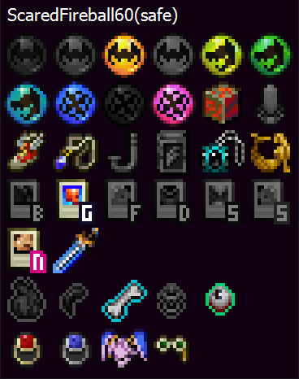

Seed and Preset Tracking
The tracker detects the seed name and preset in the main menu. The preset determines what the progression relics are and if the tracker will display equipment locations.
Relic and Item Tracking
Collected relics or progression items will either appear on the tracker or become colored depending on the tracker settings.
